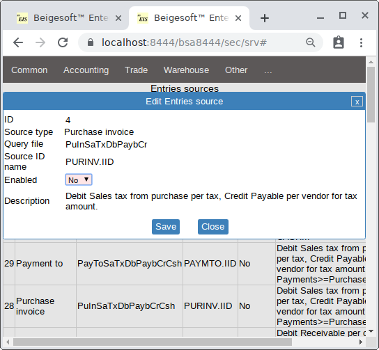
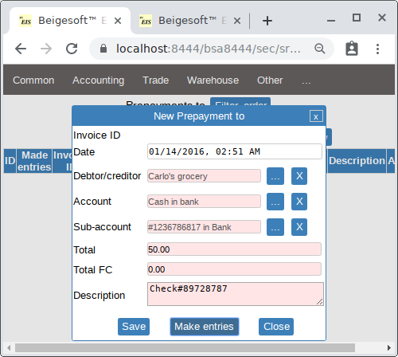
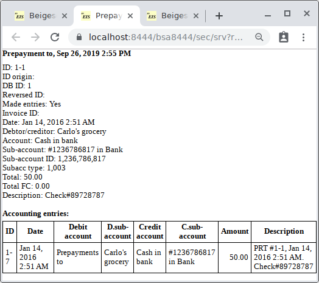
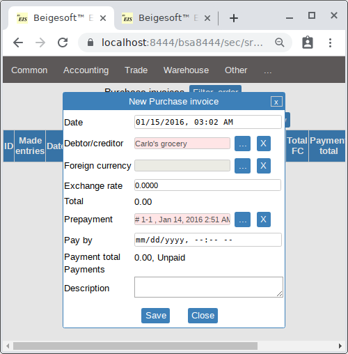
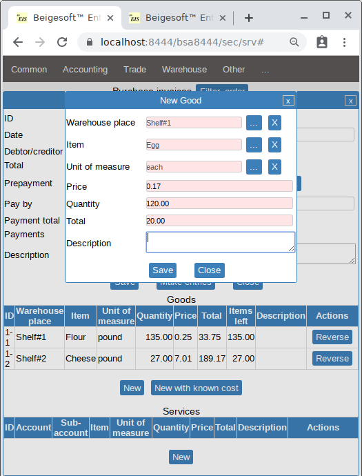
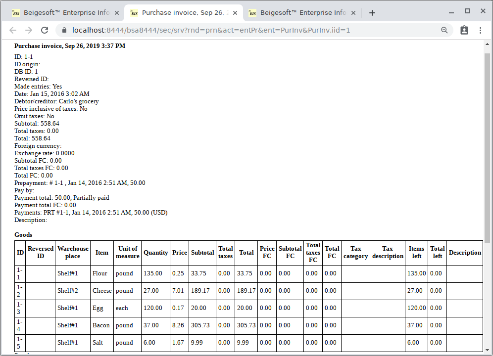
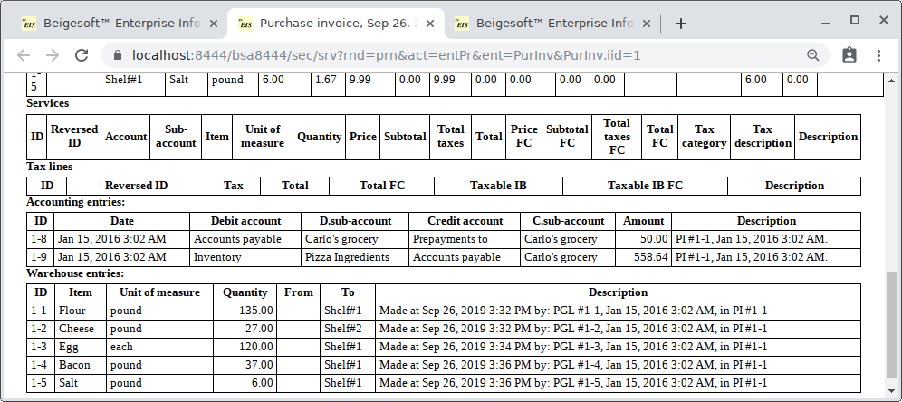
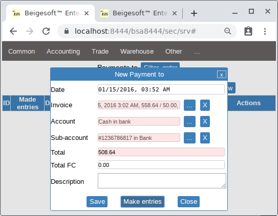
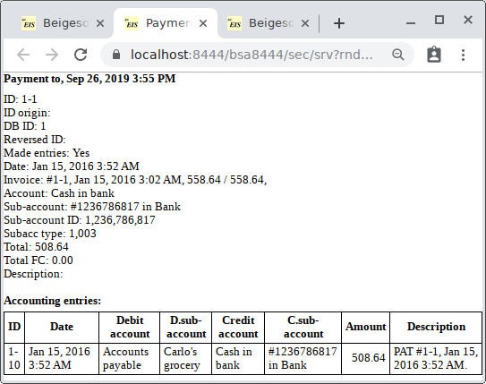
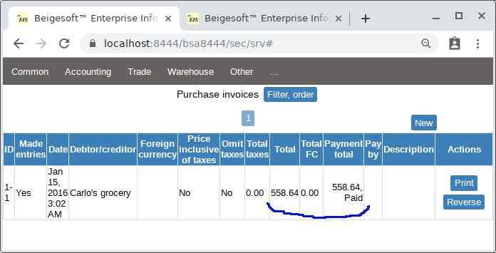

Accounting for purchases, prepayments, payments tracking, bank reconciliation.
Keywords: Accounting for purchases, prepayments, sales taxes from purchases, payments tracking, bank reconciliation.
Sales taxes that are paid on purchases of raw materials (producing USA).
According to IRS 535 Business Expenses, Page 18 sales taxes that Bob pays on purchases of materials are business expenses (sales taxes are included into material cost), i.e. they are deducting income tax:
... Any sales tax you pay on a service for your business, or on the purchase or use of property in your business is treated as part of the cost of the service or property. If the service or the cost or use of the property is a deductible business expense, you can deduct the tax as part of that service or cost. If the property is merchandise bought for resale, the sales tax is part of the cost of the merchandise. ...That is, sales taxes from purchases are included into inventory and they become expenses automatically as part of Cost Of Goods Sold (method FIFO in this case). So Bob should set accounting settings "Extract sales taxes from purchase" to No, and set "Enabled" to "No" for "Entries source" #4 "Purchase invoice. Debit Sales tax from purchase per tax, Credit Payable per vendor for tax amount.":

He also should set "Enabled" to "No" the Sales Tax From Purchase asset account.
* Term "extract sales taxes from purchase/sales" means that you should record sales/purchases of goods/services as if these goods/services are not taxable (without taxes), i.e. you should not make tax records. For example, if you buy 1 pound of cheese for 10.5 USD with 0.5 USD sales tax included in the price, the you should make this entry:
Debit Inventory For 10.5 USD, Credit Accounts Payable For 10.5 USDinstead of these entries (including extracting the sales tax):
Debit Inventory For 10.0 USD, Credit Accounts Payable For 10.0 USD Sales Tax Receivable For 0.5 USD, Credit Accounts Payable For 0.5 USD
If you have to use a different method to account sales tax from purchase, then set accounting settings "Extract sales taxes from purchase" to Yes, and set "Enabled" to "Yes" for method #4 "Purchase invoice. Debit Sales tax from purchase per tax, Credit Payable per vendor for tax amount." Then you should set "Enabled" to "Yes" the Sales Tax From Purchase asset account. Also you should add sales taxes, item tax categories and set appropriate tax categories for goods/services (see Accounting of sales, prepayments, payments tracking, COGS.) You are able to change the tax amount in a purchase invoice line (item basis and aggregate/only rate) or total invoice (invoice basis). In the USA extracting sales taxes from purchases (from item's cost) is required when it must be used the "inventory capitalized costs" method (see IRS 538, Page 18 Uniform Capitalization Rules). Capitalized cost becomes an expense partially, depending on ending inventory (final product).
For many other countries sales taxes (e.g. VAT, GST) from purchases are always extracted from goods/services cost, and they deduct themselves (taxes from purchases deduct taxes from sales).
Prepayments.
Bob prepaid goods to Carlo's grocery on 14 Jan:

* The Total FC field is used for purchases in a foreign currency.
The "Prepayment for purchase" has made these simple accounting entries:

* After a document has made entries you can't change it, you can only reverse it or change description (only) of its accounting entries. Beigesoft™ EIS is a high-performance software, this kind of software requires accuracy, otherwise you will get mess-up quickly. Just make database backup more frequently.
Purchases.
Bob bought pizza ingredients on Jan 15, then he filled the purchase invoice, then posted it:

The pay by date field is optional, the Foreign currency and exchange rate fields are used for purchases in a foreign currency, after you added an invoice line in the native currency they will disappear.

the full report is:


* As you can see, this purchase invoice has made automatically the accounting record "prepayments to account payable". Only one prepayment per an invoice is allowed (implemented), otherwise you should make prepayments and payments tracking "by hand".
* You also can see that the sales tax for the cheese is included into its cost, i.e. it is not extracted.
Payments tracking
Bob paid the rest to the Carlo's grocery for the purchase invoice#1 on 15 Jan:

The document "Payment for purchase" made these simple accounting entries:

The purchase invoice's payment's tracking fields in the list are changed after that:

Bank reconciliation.
When the bank's account's balance in your accounting system (software or book) is not the same as in the bank (in the bank statement), then you have to make adjusting entries. This is called "bank reconciliation". For example, yesterday you received a check for 500 USD from the customer "Firm A" and made this accounting entry:
Debit CashInBank.Account#243443354 for 500 USD Credit AccountsReceivable.FirmA for 500 USD
After that your bank's account's balance is 10000 USD (in your accounting system).
Today you received the bank statement that is saying that the check was rejected, and you were charged for 10 USD additionally cause that "wrong check",
and the balance is 9490 USD.
So you have to make two adjusting entries:
Credit CashInBank.Account#243443354 for 500 USD Debit AccountsReceivable.FirmA for 500 USD
Credit CashInBank.Account#243443354 for 10 USD Debit Expenses.BankExpenses for 10 USD